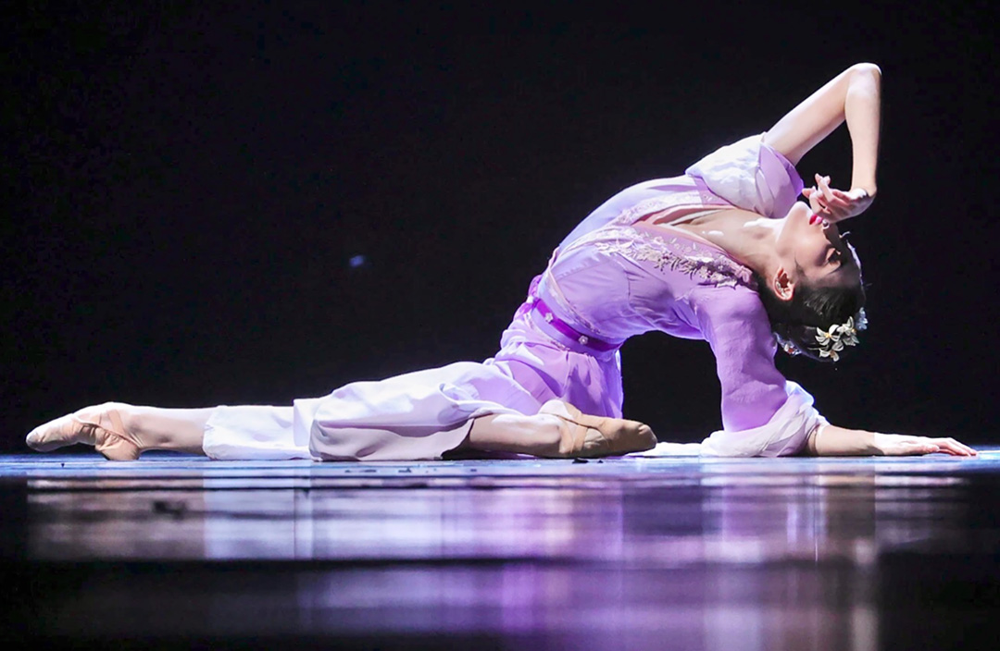
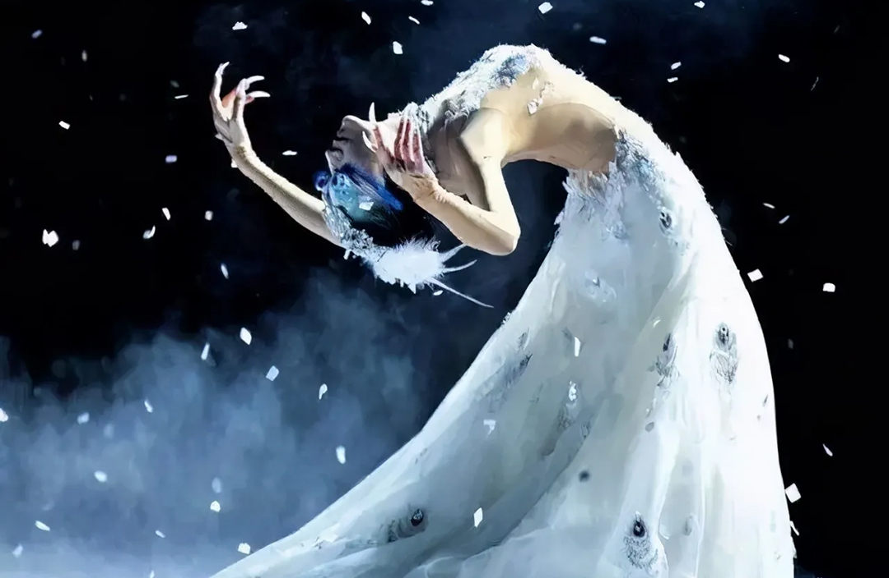
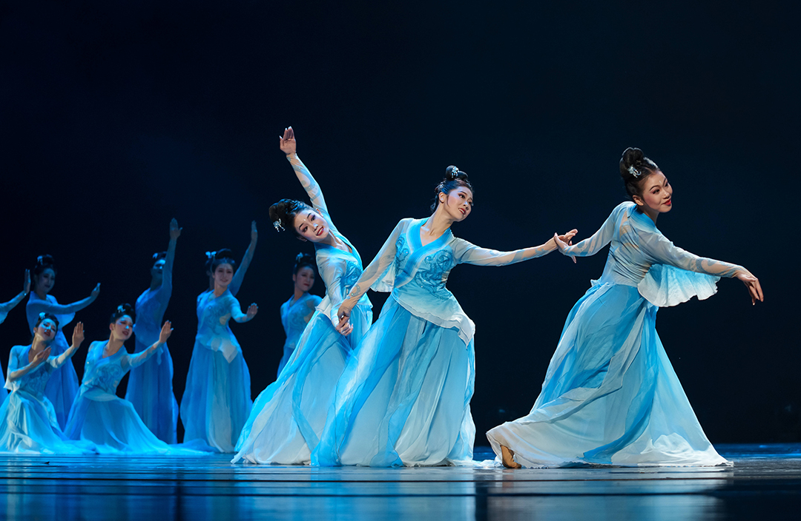
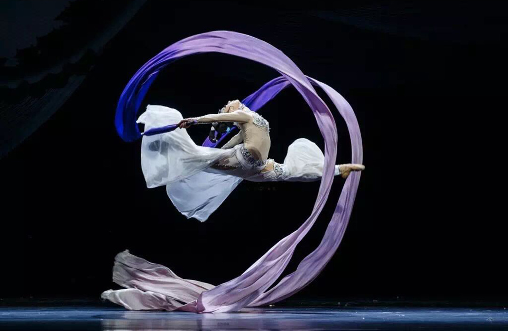
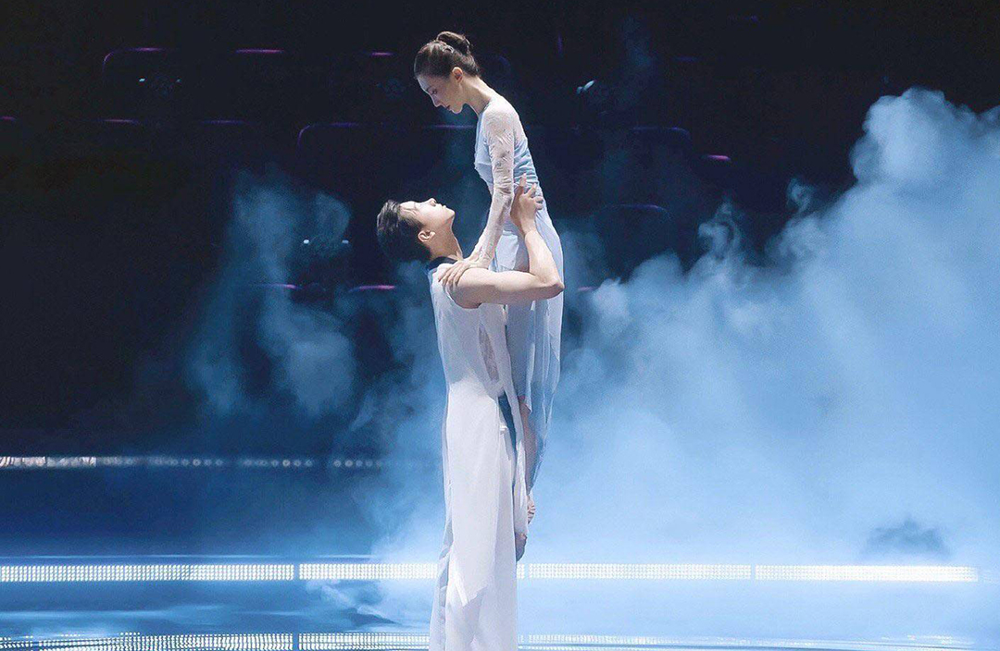
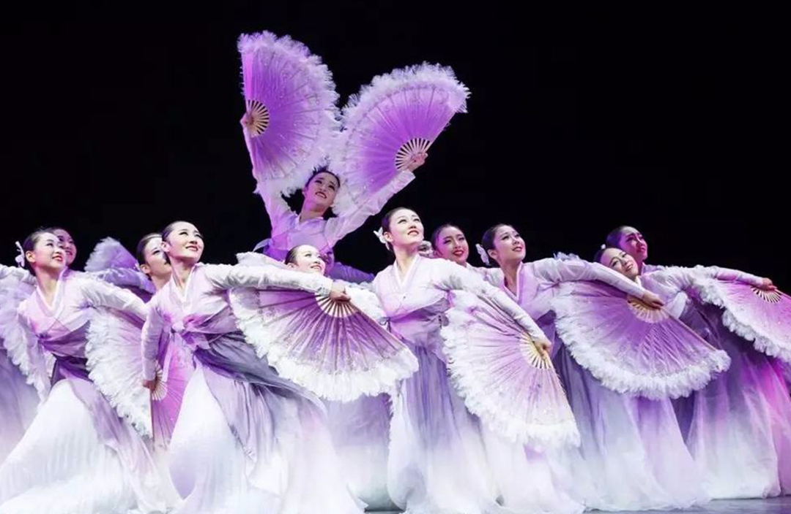
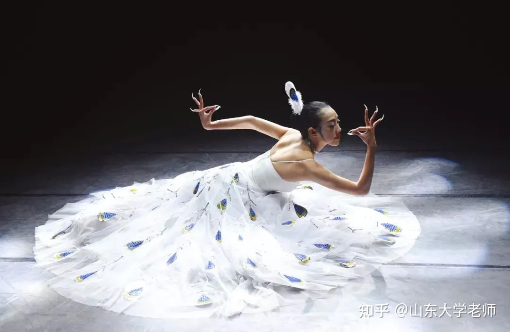
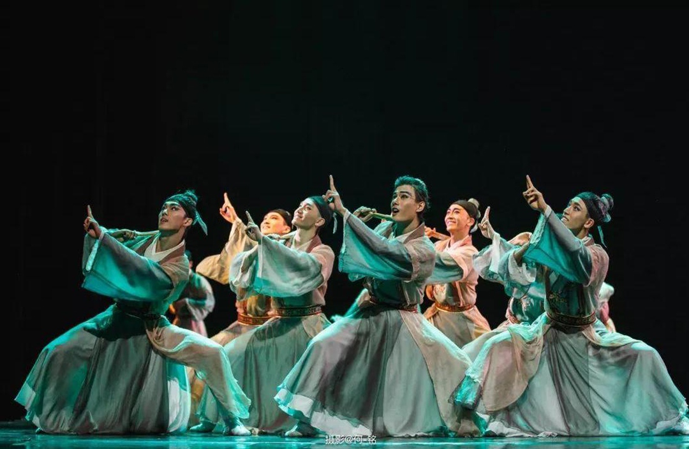

Dancer 朱瑾慧 (Zhu Jin Hui) performing 易安醉 (Drunken Peace).

Dancer 杨丽萍 (Yang Li Ping) performing The Spirit of the Peacock.

Dancers performing at the 11th Guangxi music and dance competition.

Dancer performing the piece 传丝公主 (The Silk Road Princess).

Dancer Gina Chen performing 破茧 (Cocoon).

Dancers performing the piece 心灵之翼 (Spirit of Wings) at the Taoli World Dance competition.

Dance teacher from the Shan Dong college performing.

Dancers performing 纸扇书生 (Paper Fan Scholars).